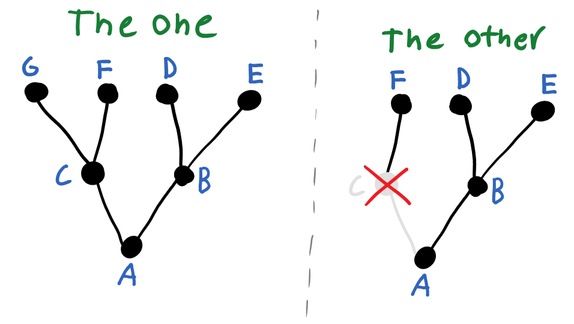

Let us represent our beliefs as nodes in a network. Most nodes in your network of beliefs have dependencies, they are connected to other beliefs the truth value of which they are contingent on.
Picture a subset of your network of beliefs, let us take a simplified section that looks like a tree, stripping away the complex interconnections to aid in visualization.
Beliefs B and C are predicated on belief A, beliefs D and E on belief B, and beliefs F and G on belief C. Thus belief A is need for beliefs B and C, belief B for D and E, and C for F and G. (see the figure)
{kind=link}

The One: Apples grow on trees - lets us call this belief F.
The Other: What are trees? and why are you labeling your beliefs with letters?
The one is trying to convince the other of F but the other lacks belief C (the belief in trees), the one is unable to successfully graft the branch of their tree containing F onto the other’s tree as their is no suitable node at which to affix it.
The one must then traverse back down their tree to node C and first convince the other of C. The one made the mistake of thinking the inferential distance between themself and the other was but 1 node when in actuality it was 2. The one must convince the other not merely that apples grow on trees but must also introduce the concept of trees.
The One: Trees are large upright plants with stiff bodies due in part to large amounts of lignin in some of their cell walls, a property not shared by they bendier cousins. There is one over their with apples growing on it. (points to a nearby apple tree)
Assessing the inferential distance between yourself and your interlocutor can often be accomplished by the asking of questions which prompt an explication of their belief structure. It also helps here if you have exercised good epistemic hygiene and can clearly identify the path you must take in order to converge. The concept of inferential distance is interestingly related to finding the double crux of a disagreement, you must traverse back through your belief network until you find the relevant point of difference in your network or the genuine source of your disagreement. Indeed inferential distance may be measured by the number of iterations of the double crux game algorithm you have to execute find the crux. Once the extent of the gulf between you has been assayed you may begin to devise a path to traverse it.
There is a distinction to be drawn between adding a new node to an interlocutor’s belief network when the desired new node is not in obvious tension with other beliefs held by the interlocutor, and the condition where you are attempting to displace an existing node with a different mutually exclusive one. The former is often much easier than the latter.
The Other: There is not such thing as trees.
The One: let us call that belief C’, What then is yonder plant with apples growing on it? (points to a nearby apple tree)
The Other: That is just an unusually large fern. The One: sigh
The Other believes C’ which they are aware is mutually exclusive with C.
Playing the double crux game with those not initiated in it (the weak version) can can be challenging. Taking a Socratic approach with genuine expressions of curiosity about what exactly your interlocutor believes can be effective at causing your interlocutor to notice when they are expressing a belief in belief as opposed to one that pays rent in anticipated experiences as they should be encouraged by your curiosity to explain to you exactly why they believe what they believe.
Depending on your interlocutor and subject you may wish to begin incrementally to bridge the void, node by node. It is a common error to attempt to plant whole sections of your belief tree in infertile soil and to grow frustrated when it fails to take root. Complex, obscure or controversial issues are frequently best tackled stepwise, especially when in dialog with someone not yet explicitly committed to a rationalist approach or otherwise high in Doxastic Openness.
Some branches of the tree which you may wish to graft onto others will have deeply rooted dependencies which run back to fundamental epistemic differences and will present a major challenge to make them successfully take. Some branches however have shallow dependencies and can easily be transfered even between those with but a single necessary belief in common. This can be strategically important as people may believe the same thing for different or even invalid reasons and pointing this out can be detrimental in the short term if you are running a “Mothers Against Drunk Driving” style single issue campaign (Potential Dark Side Applications Warning).